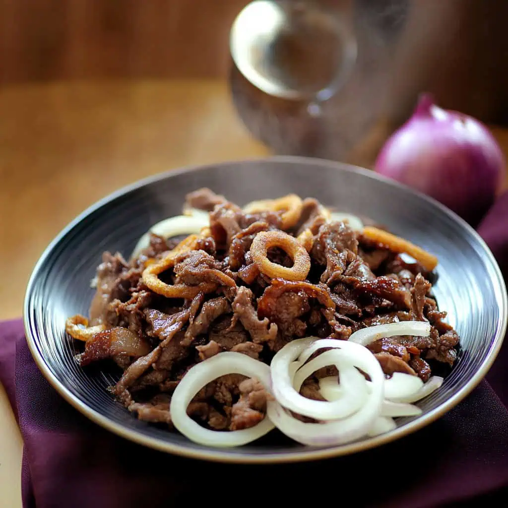
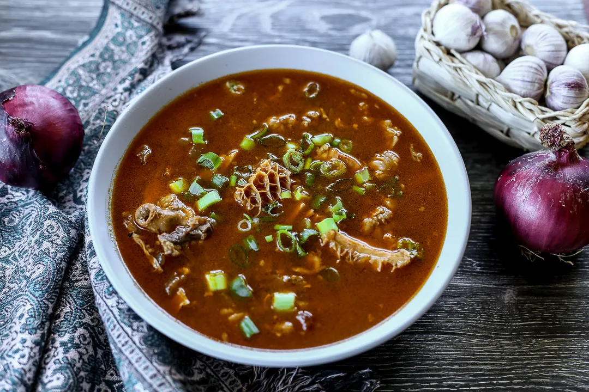
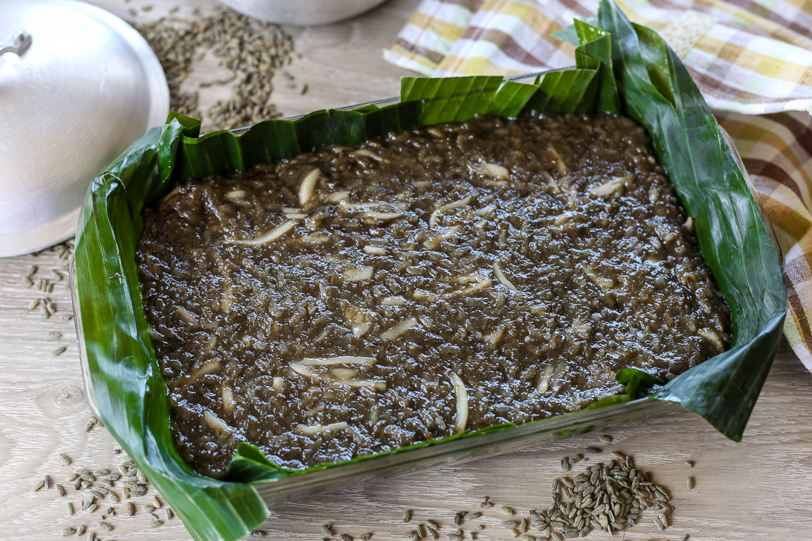
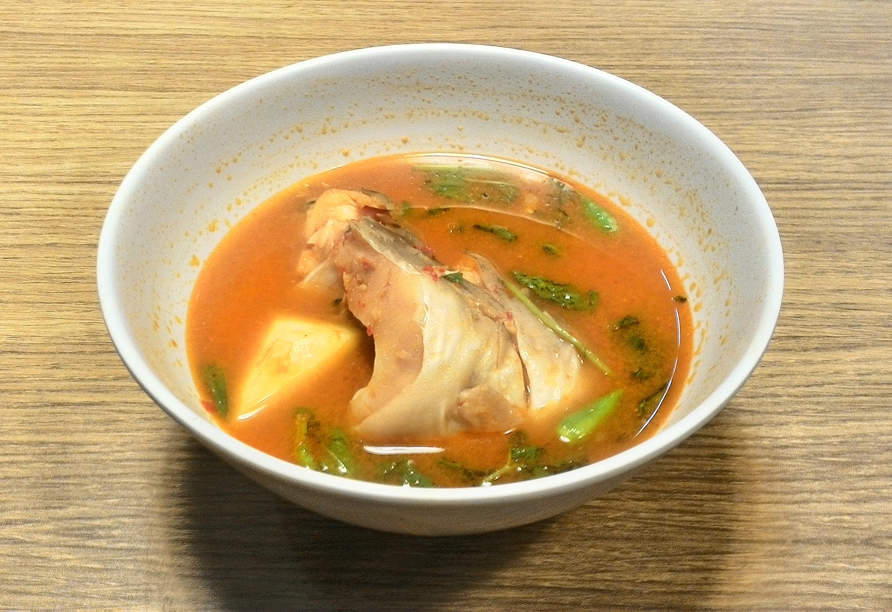

Must-Try Delicacies

Pigar-Pigar
Pigar-Pigar is one of the most popular street foods in Dagupan City. It is made from thin slices of beef quickly fried in hot oil with onions and cabbage. Locals usually enjoy it during late-night food trips, making it a famous bonding meal among friends and families. Its strong aroma and sizzling preparation make it a must-try experience for visitors.
Where to try it: Dagupan City food strip (especially at night)

Kaleskes
Kaleskes is a traditional goat meat soup known for its rich and savory flavor. It is commonly served during fiestas and special gatherings in Pangasinan. Locals prepare it slowly to enhance its taste, making it a comforting dish that represents rural Filipino cooking traditions.
Where to try it: Local carinderias and town eateries

Inlubi
Inlubi is a traditional sweet delicacy made from cassava, coconut milk, and sugar. It is usually wrapped in banana leaves and steamed, giving it a natural aroma and soft texture. This dessert is often prepared during family gatherings and special occasions in Pangasinan.
Where to try it: Local markets and homemade versions

Pindang
Pindang is a preserved meat dish similar to tocino but with a more savory taste. It is marinated for several days before cooking, making it flavorful and slightly sweet-salty. It is a common breakfast meal in Pangasinan households served with rice and eggs.
Where to try it: Local markets and eateries